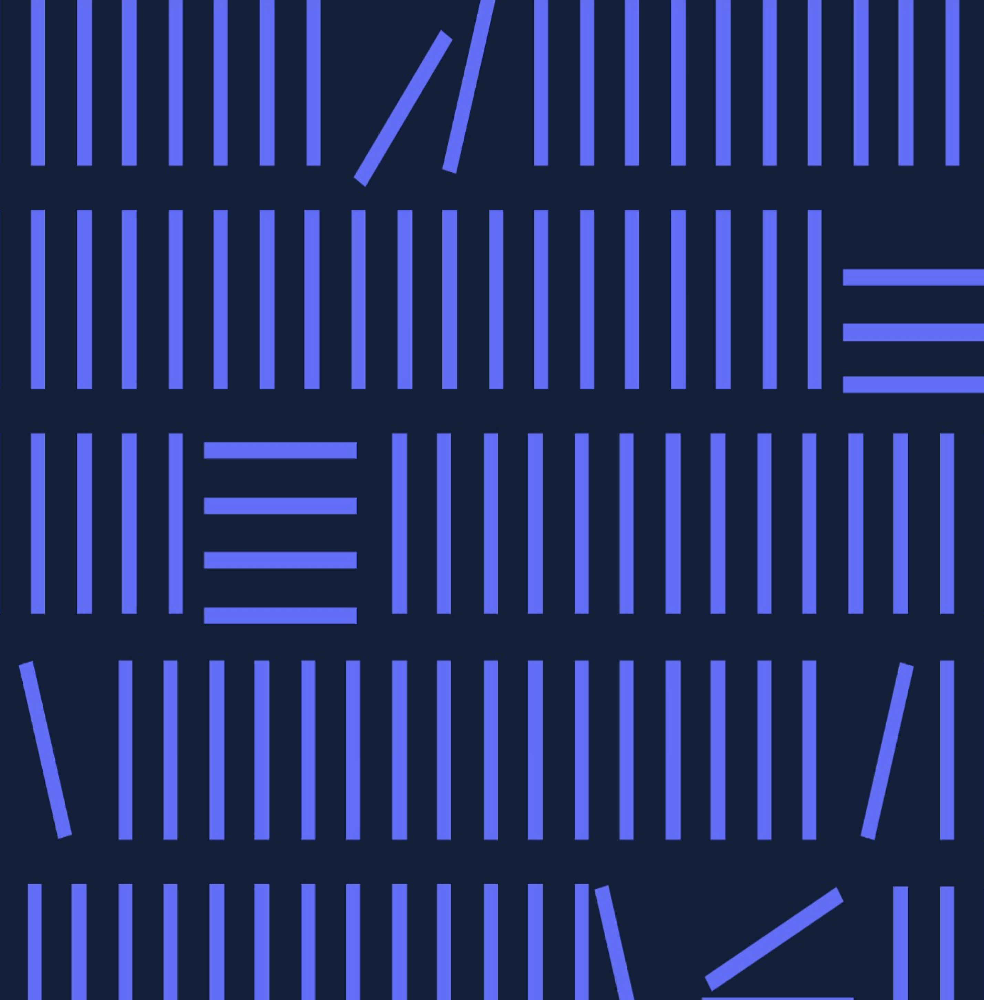

Introduction
- vue.js
- php
- html
- scss
- javascript
주업무 내용 : 웹퍼블리싱, 프론트 개발, 개발 PM(백앤드 개발자 및 디자이너 업무 진행 관리), 영/중/일/스페인어 로컬리제이션 담당 등
저널랩 프론트 개발 인원 : 권지민 1명
워드프레스로 만들어져있던 홈페이지를 개편하는 과정에 웹퍼블리셔 및 개발 PM으로 참여하게 되었습니다. 기획대로 디자인이 되었는지 확인을 우선 하였고, 보완할 점 있으면 같이 논의하여 수정하면서 작업하였습니다. 최종적으로는 총 18개의 페이지를 작업하였습니다.
회사 자체 개발된 API를 활용하여 논문을 가져와 앞단에 출력하였습니다. 또 번역회사의 웹사이트이다 보니, 영문화가 필요하여 회사 자체 시스템을 활용하여 로컬리제이션 진행하였습니다. 외부 백앤드 개발자와 협업하여 조회수 데이터 저장/ 국내, 국외 회원가입 저장되도록/ 뉴스레터 게시판 글 저장 기능 정리하여 개발 요청 및 팔로업하였습니다.
전체 리뉴얼 페이지 중에서 가장 핵심 페이지라고 할 수 있는 "연구 트렌드"입니다. 인공지능 개발팀에서 자체 API를 개발하여 논문을 가져와주면, 그것을 앞단에서 보여질 수 있도록 개발하였습니다. 검색 기능/ 소팅 기능/ 카테고리 분류/ 페이지네이션 구현 등 처음으로 모든것을 혼자 구현해 낸 작업물입니다.
반드시 아래 링크에서 확인해 주세요! 연구트렌드는 php로 설정후 보시길 권장드립니다.